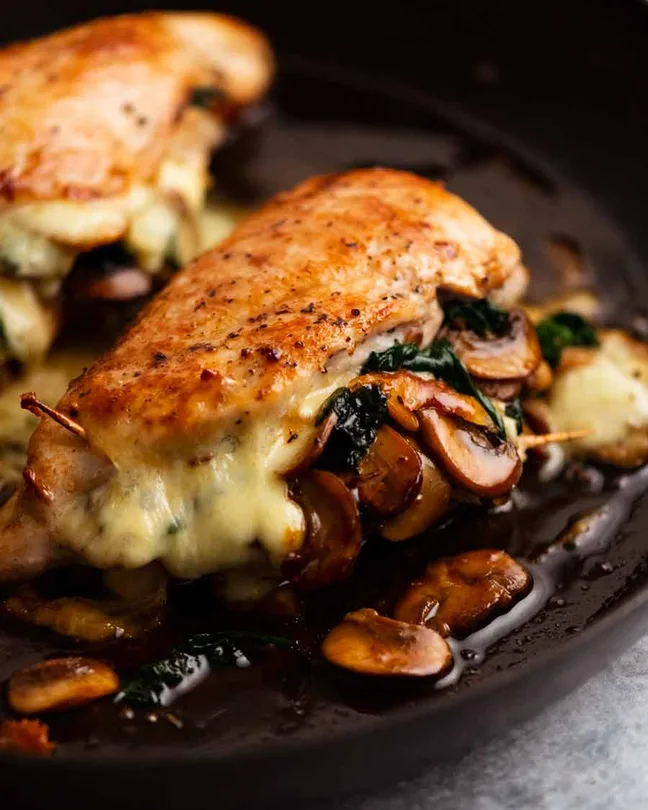

Stuffed Chicken

Description
This Stuffed Chicken Breast is filled with a creamy 3-cheese blend with spinach, herbs, and sun-dried tomatoes!
It’s easy to make and customize with different fillings!
Ingredients
- 2 x 220g / 7oz chicken breast
- 3/4 tsp salt
- 1/4 tsp pepper
- 30g / 2 tbsp unsalted butter
- 200g / 7 oz mushrooms
- 2 garlic cloves
- 1/2 tsp thyme leaves
- 2 cups baby spinach
- 80 g / 3oz mozzarella
Steps
- Cut pockets into each chicken breast, being sure not to cut all the way through (see photos in post). Cut on
the side with the fold in the meat, to keep the smooth side intact.
- Season the inside and outside of the chicken with half the salt and pepper.
- Mushroom filling: Melt butter in a heavy based oven proof skillet over high heat. Add mushrooms and cook for
3 minutes until they start to turn pretty golden. Then add garlic, thyme, remaining salt and pepper and
continue cooking for a further 2 minutes until mushrooms are nice and golden.
- Add spinach: Add baby spinach and stir until wilted – about 30 seconds.
- Stuff mushroom mixture into the pocket of each chicken, then top with cheese.
- Seal with toothpicks as best you can – it doesn’t need to be fully sealed like we do with Chicken Kiev. Just
mostly sealed.
- Sear chicken: Give the pan a quick wipe with paper towels. Heat oil over medium high heat. Sear each side of
the chicken breast for 1 1/2 minutes until golden.
- Bake 15 minutes: Transfer the skillet to the oven and bake for 15 minutes, or until the internal temperature
of the chicken is 65°C/149°F (chicken flesh, not the mushroom filling).
- Rest 5 minutes: Remove from tray onto a plate, loosely cover with foil and rest for 5 minutes.
- Serve!
Home